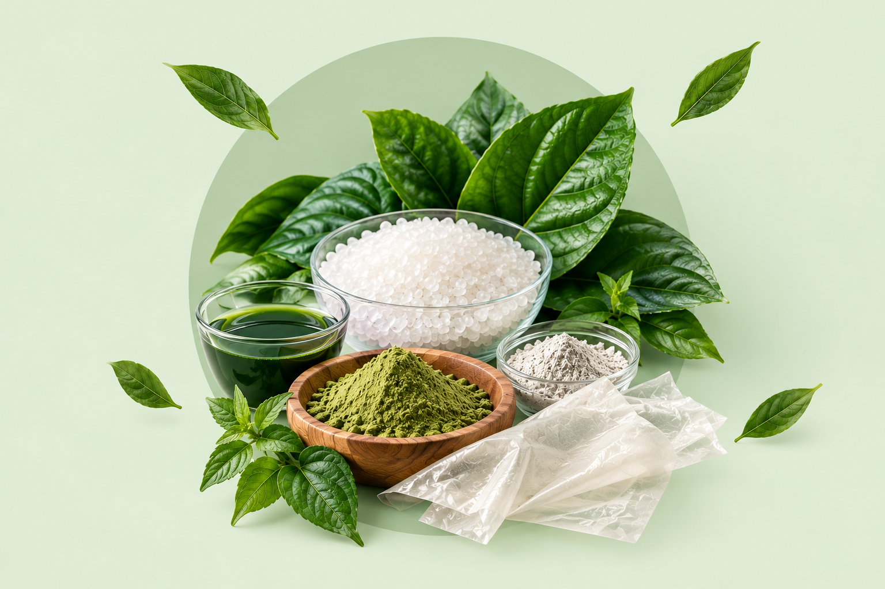
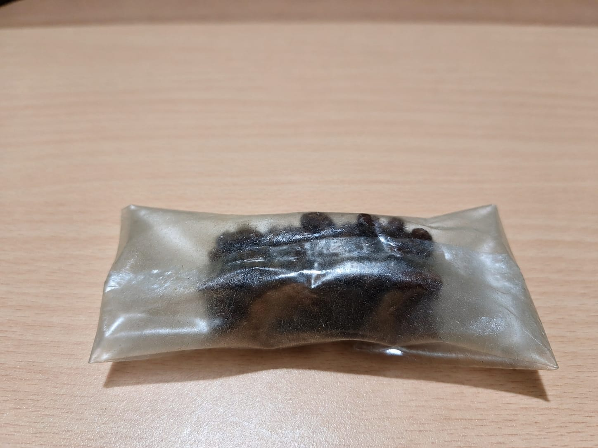
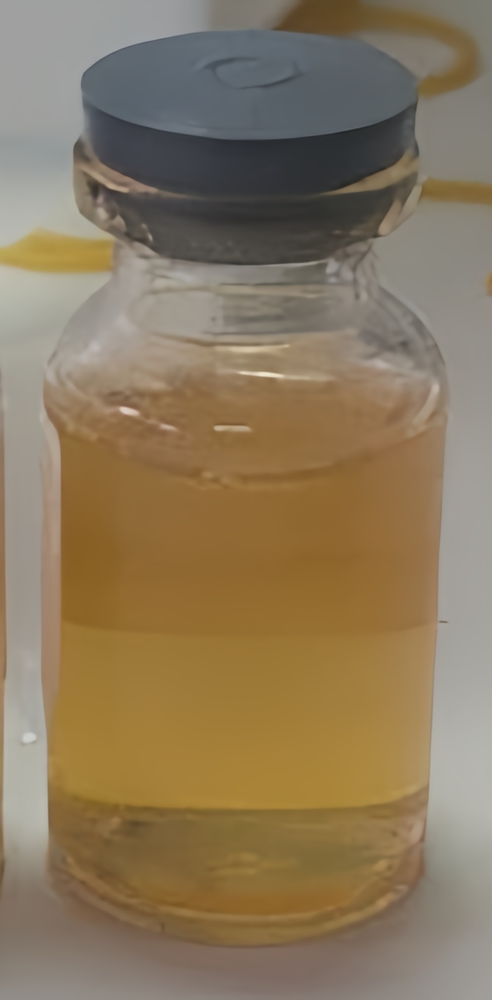
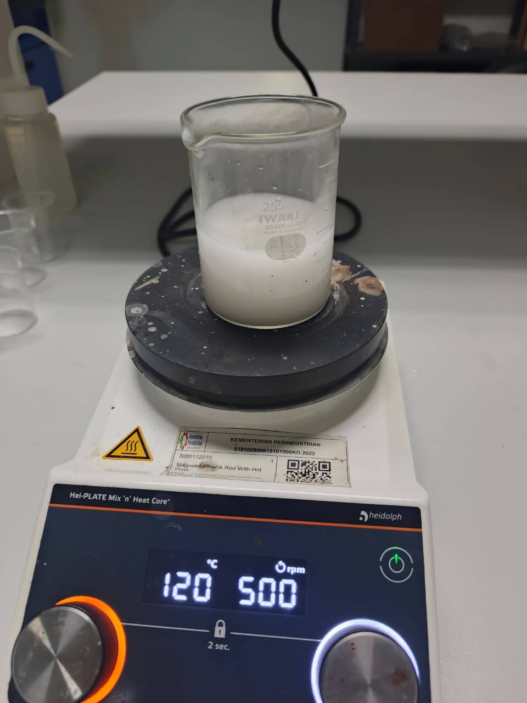

01
Nanopartikel Ag
Silver nanoparticles studied for their potential role in the properties of bioplastic materials.
PIONEERS
Green innovation emphasizes eco-friendly technology, while a plastic-free future highlights our mission toward more sustainable materials.

WHY SILVETA?
Plastic waste highlights the need to explore more sustainable material alternatives and environmentally conscious production methods.
Utilizes betel leaf extract as a renewable and eco-friendly reducing agent.
Silver nanoparticles are studied for their potential antimicrobial properties in bioplastic applications.

Designed to explore biodegradable alternatives to conventional petroleum-based plastics.
The material can be evaluated for strength, flexibility, and moisture resistance.
WHY BIOPLASTIC?
Bioplastics offer an alternative approach to conventional petroleum-based plastics by using renewable materials and innovative production methods.
OUR MATERIALS
SILVETA explores bioplastic materials, silver nanoparticles (Ag), and betel leaf extract for potential sustainable applications.
Silver nanoparticles studied for their potential role in the properties of bioplastic materials.
Plant-derived compounds found in various botanical extracts.
Natural compounds being explored for their properties in plant-based formulations.
OUR PRODUCT APPLICATION
FROM MATERIAL TO PRODUCT
 01
01
Selection and preparation of raw materials.

02The Syntesisof silver nanoparticles (AgNPs) using betel leaf extract as a natural reducing agent.

03Processing the ingredients to form the bioplastic material.
 04
04
The resulting material is shaped and evaluated for its intended application.